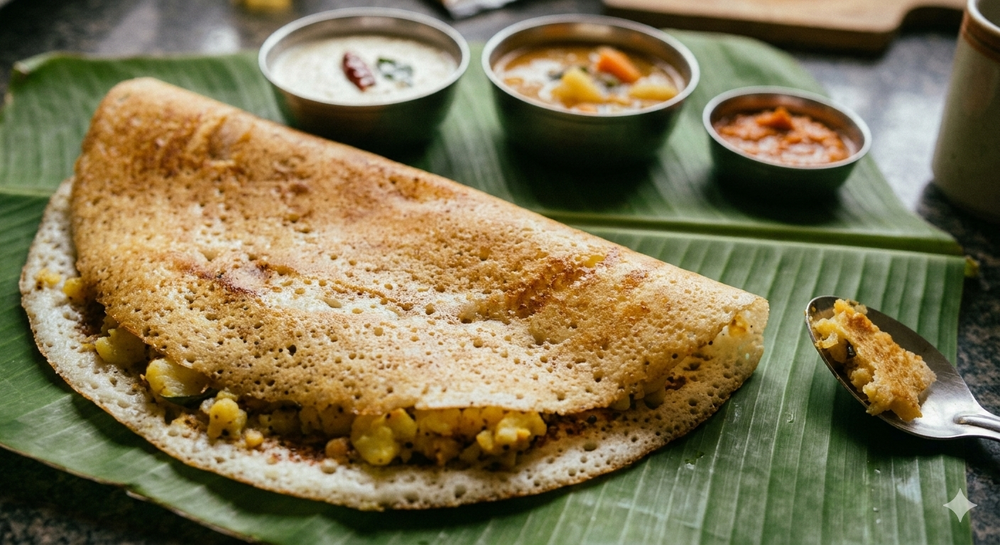

Home
MASALA DOSA

Description
Masala Dosa is a crown jewel of South Indian cuisine, consisting of a large, fermented rice-and-lentil crepe that is ladled thin and roasted until shatteringly crisp and golden brown. The traditional variant is smeared inside with a spicy red chutney, packed with a seasoned, comforting potato mash (aloo masala), and served alongside hot sambar and fresh coconut chutney.
Ingredients
- Sona Masuri or Idli Rice: 3 cups
- Whole Skinless Urad Dal (Black Gram): 1 cup
- Chana Dal (Bengal Gram): 1/4 cup (crucial for that golden color and crunch)
- Fenugreek Seeds (Methi): 1 tsp (aids fermentation and crispiness)
- Poha (Flattened Rice): 1 cup (keeps it soft on the inside)
- Salt & Lemon Juice: To taste
- Potatoes: 4 medium, boiled and roughly mashed
- Oil: 1.5 tbsp
- Mustard Seeds & Cumin Seeds: 1/2 tsp each
- Urad Dal & Chana Dal: 1 tsp each (for temper crunch)
- Onion: 1 large, thinly sliced
- Green Chillies: 2, finely chopped
- Curry Leaves: A sprig
- Turmeric Powder: 1/2 tsp
Steps
- Soak: Rinse the rice, urad dal, chana dal, and methi seeds. Soak the rice in one large bowl and the dals with methi seeds in another bowl for 5–6 hours. Soak the poha separately 30 minutes before grinding.
- Grind: Drain the water. Grind the dal first using ice-cold water until it becomes ultra-fluffy, smooth, and aerated. Grind the rice and poha together into a very slightly grainy texture.
- Ferment: Combine both batters in a large container using your clean hands (hand mixing kickstarts fermentation). Cover loosely and leave it in a warm dark spot for 8–12 hours until it doubles in volume and smells pleasantly tangy. Add salt just before making dosas.
- Temper: Heat 1.5 tbsp oil in a pan. Add mustard seeds, cumin seeds, urad dal, and chana dal. Let them splutter and brown.
- Aromatics: Add the sliced onions, ginger, green chillies, and curry leaves. Sauté on medium heat until the onions turn translucent—do not brown them.
- Assemble: Stir in the turmeric powder and salt. Toss in the boiled, mashed potatoes and 1/4 cup of water to create a slightly moist, spreadable texture. Simmer for 2 minutes, squeeze fresh lemon juice, finish with fresh coriander, and turn off the heat.Add Cheese: Place a cheese slice (or a generous handful of grated cheese) directly on top of the creamy veggie layer.
- Prep the Griddle: Heat a cast-iron tawa or heavy-duty non-stick pan over medium-high heat. Splash a few drops of water on it (it should sizzle away immediately) and wipe it clean with a damp cloth or a cut half-onion to season the surface.
- The Spread: Pour a large ladleful of batter right into the center of the pan. Working quickly from the inside out, spiral the ladle in widening concentric circles to spread the batter paper-thin.
- Crisp It Up: Drizzle a teaspoon of ghee or butter around the edges and over the center. Lower the heat slightly and let it cook until the bottom turns deep golden-brown and the edges lift away naturally from the pan.
- Stuff & Serve: Place a generous scoop of the warm potato masala in the center. Fold the dosa over into a neat cylinder or triangle and serve hot off the griddle with coconut chutney and hot sambar!